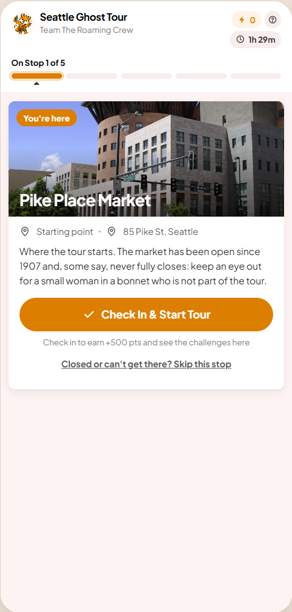
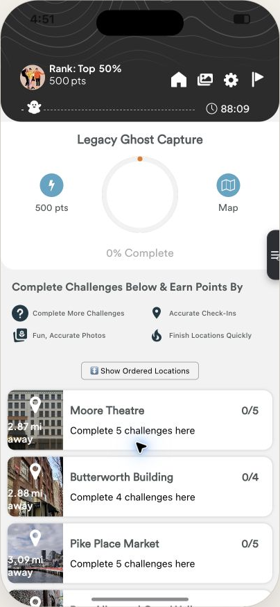
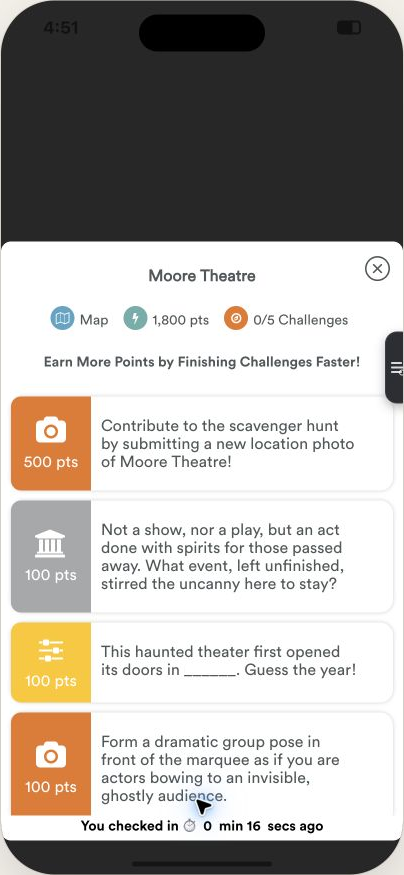
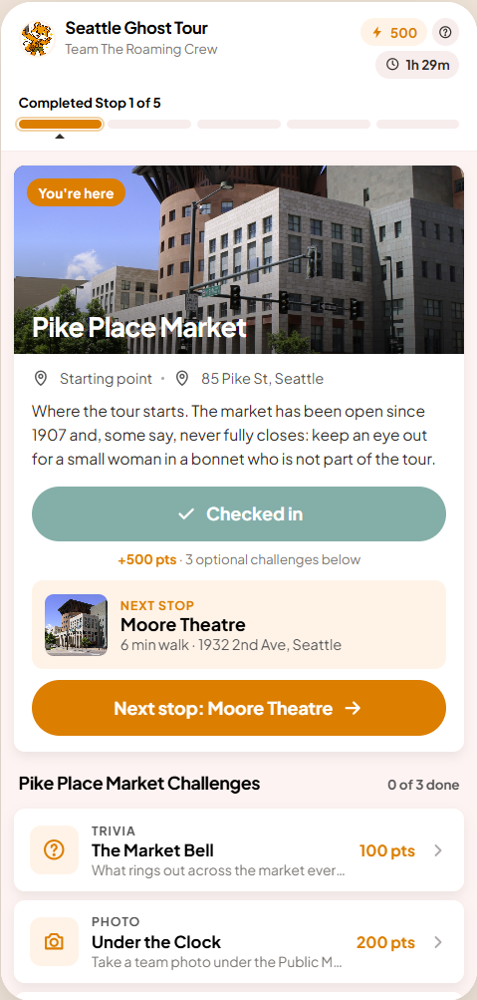
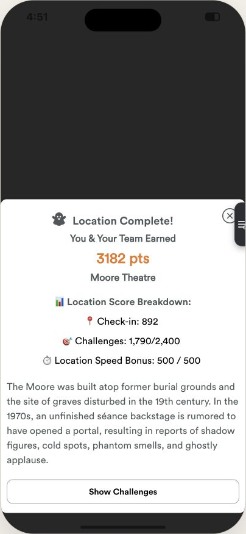
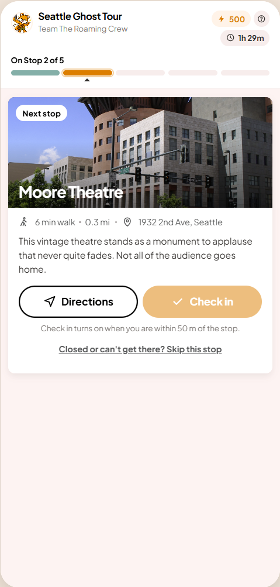

People spend the whole walking tour on this one screen, usually in a group, outdoors, often at night. Completion and satisfaction have dropped. This page sets out what the screen is for, the rules the redesign follows, and then puts the old and new side by side.

The redesign, stop 1. One card, one button.
Part one
Where do we go next?
The name of the next stop, a picture of it, and how long the walk is. Not "2.87 mi". "6 min walk".
What do we do when we get there?
Check in. That is the job. Then the next stop is one tap away, and the challenges at this stop are optional extras, each with a word for what it is: Trivia, Photo, Fill in.
Are we doing OK?
"On Stop 2 of 5" and a score. That is enough. Rank, rings, timers and breakdowns can wait for the end.
What if we're stuck?
A gate is locked, a question is too hard, the GPS is wrong. There is always a way forward and it never costs the team anything.
Anything on the screen that does not answer one of those four questions has to earn its place, or go.
Part two
A group standing on a pavement should know what to do in one glance. Points, the fox and the celebration matter, but they come after the action, never instead of it. A hunt nobody finishes has no fun in it.
Every state of the screen has exactly one primary button: Directions, Check in, Submit, Let's go. If two things are orange, neither is the answer.
Closed stop, hard question, bad signal: each has a plain way out (skip, hint, move on) and skipping never loses points. The worst outcome is a team that gives up.
No GPS-accuracy score, no speed bonus, no countdown as the biggest number on screen. Groups that are enjoying the tour should not be punished for taking their time.
Labels beat colour codes and mystery icons. Plain English beats game jargon. "Check in turns on when you are within 50 m" instead of a greyed-out button and a guess.
The main screen is home. At most one sheet slides over it, and closing it always lands you back where you were. No modal on a sheet on a modal.
Arriving is the accomplishment, so the check-in itself gets the celebration: the button pops, confetti, the points land, and "Next stop" appears right there. Challenges are optional extras that slide up under the same card, so a group can always keep moving.
One typeface, one orange, one icon style, the fox. No emoji, no fourth font. Consistency reads as "finished", and finished reads as trustworthy.
Part three

What changed

What changed


What changed

Earlier versions: v2 (the same argument with a full comparison table) and v1 (screen-by-screen comments on the current design). Measurement plan and next steps are in the written review.